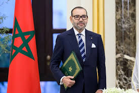
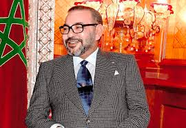
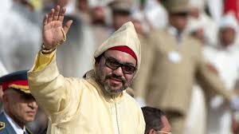
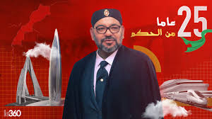

النشأة والبداية
وُلد الملك محمد السادس في 21 أغسطس 1963 بالرباط. عُرف منذ صغره بالتواضع والطموح. بدأ تعليمه في المدرسة القرآنية بالقصر الملكي وتابع دراسته في العلوم السياسية والقانون.
مسيرته الأكاديمية
حصل على الإجازة في القانون العام من جامعة محمد الخامس بالرباط، ثم أكمل دراساته في فرنسا، حيث نال الدكتوراه في العلوم السياسية.
التدرج في المسؤوليات
قبل اعتلاء العرش، قام بعدة مهام دبلوماسية دولية. كان رئيسًا للجنة الألعاب الفرانكوفونية عام 1994.
توليه العرش
تولى العرش في 23 يوليو 1999. ركز على الإصلاحات الاقتصادية والاجتماعية، مما جعله رمزًا للاستقرار والحداثة.
الإصلاحات السياسية
قدم دستور 2011 الذي عزز دور البرلمان والحكومة وكرّس استقلالية القضاء والحريات العامة.
الاقتصاد والتنمية
مشاريع كبرى مثل ميناء طنجة المتوسط، القطار فائق السرعة "البراق"، ومحطات الطاقة المتجددة جعلت المغرب نموذجًا اقتصاديًا متقدمًا.
المجال الاجتماعي
أطلق المبادرة الوطنية للتنمية البشرية ومدونة الأسرة لتعزيز حقوق المرأة، واهتم بتحسين الصحة والتعليم.
الديبلوماسية الدولية
ركز على تعزيز العلاقات مع إفريقيا وأوروبا وأمريكا. دعم قضية الصحراء المغربية من خلال الدبلوماسية التنموية.
الحياة الشخصية والهوايات
متزوج من الأميرة للا سلمى وله ولي العهد الأمير مولاي الحسن. يحب ركوب الخيل والملاكمة، ويهتم بالعلوم والتاريخ.
الأوسمة والجوائز
حصل على جوائز وأوسمة دولية عديدة، منها وسام جوقة الشرف من فرنسا ووسام السلام من الأمم المتحدة.
الختام
قاد الملك محمد السادس المغرب نحو الحداثة والاستقرار، مؤكداً على رؤية تجمع بين التراث والحداثة لمغرب مزدهر.